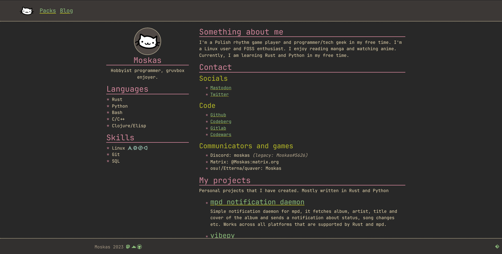

Yet another website revision
Posted on: 20.07.2023 - @Moskas
Still fully static, at least for now.The more I explore other people's blogs and websites in general, the stronger my desire becomes to create a minimalistic website. One that's centered around plain text rather than fancy animations and images that divert attention from the primary content of the website/blog: knowledge or thoughts in the form of text.
A screenshot of the old desing with bootstrap
It was a very barebones website with something like a resume at front and a mess everywhere else. Blog section existed only as a placeholder at that time.
Why opt for such a simple design?
Primarily, because I find immense pleasure in reading the thoughts and knowledge that individuals attempt to convey on their websites. I'm not in search of flashy websites built with the latest frameworks.
At times, I use a more of a basic web browser that doesn't support these advanced features (such as qutebrowser or w3m).
Because of this, my aim is to craft an aesthetically pleasing website that prioritizes plain text, incorporating only a few subtle additions of images.
Why did I choose the gruvbox colorscheme and a single column design?
I really like the Gruvbox color scheme's appearance in general. I use it throughout my system: in the terminal, web browser, text editor, etc. So it's no surprise that I have decided to use it even for the website.
I find single-column sites much more readable and approachable, especially when you have a lot of text presented at once. Some people might consider this a waste of horizontal space, but in my opinion, readability is more important than "efficient" screen space usage. Which is easier to read: text stretched across the full width of the monitor (God forbid on an ultrawide display) or a single column with a set width? In my view, it's always the latter. Additionally, the website looks essentially the same in fullscreen, tiled, and on mobile. Since I mostly tile my windows and rarely have just one window on the screen at a time, it's a pretty convenient design.
Blog
I have decided that I should finally materialize the idea of writing more as a means to express my discoveries or simply to enhance my English vocabulary and writing skills in general. It's a satisfying feeling when I can convey my thoughts in a concise and, hopefully, interesting blog post.
Websites that I enjoy reading
Altough not every one of them is static I find them very apealing and they are close to my principles.
I'll probably expand that list in the future or create some other post about media that I enjoy.Will I change the website in the future?
Certainly, the website still lacks many of the features I have in mind, but it's a starting point for sure. The overall look and feel of the site is mostly complete; I'm just making minor tweaks as I go.